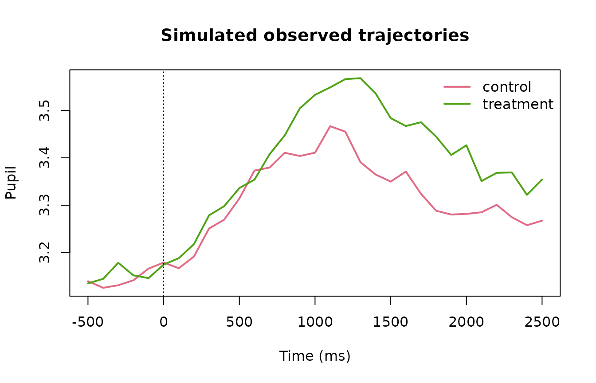
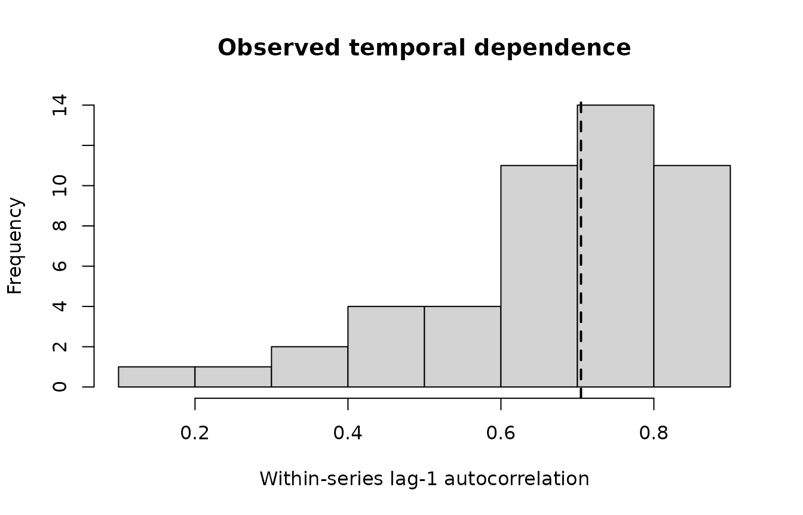

Advanced Dynamic Pupillometry in gp3bayes 0.5
Source:vignettes/advanced-dynamic-pupillometry-0-5.Rmd
advanced-dynamic-pupillometry-0-5.RmdScope
gp3bayes 0.5 extends the governed 0.4 dynamic-pupillometry foundation without replacing its data contract. The advanced layer makes the observation distribution, residual scale, temporal dependence, temporal function class, measurement uncertainty, missingness assumptions, and predictive target explicit components of the model specification.
The layer remains deliberately narrow. It does not interpolate blinks, infer cognitive states, identify causal effects, declare missingness mechanisms true, or choose a preferred model automatically.
library(gp3bayes)
pupil_advanced_capabilities()
#> capability status
#> 1 Gaussian observation model supported
#> 2 Student-t robust observation model supported
#> 3 Distributional residual scale supported
#> 4 AR(1), AR(2), bounded ARMA residual structure supported
#> 5 Spline and Gaussian-process trajectories supported
#> 6 Known measurement uncertainty supported
#> 7 MAR-oriented missing-response/predictor models supported
#> 8 Joint binocular modelling supported
#> 9 PSIS-LOO and exact K-fold comparison supported
#> 10 Explicit leave-future-out refit plans supported
#> 11 Experimental nonlinear response-shape model experimental
#> 12 Automatic blink interpolation excluded
#> 13 Automatic MNAR identification excluded
#> 14 Automatic cognitive-state inference excluded
#> 15 Automatic model winner selection excluded
#> 16 Automatic causal interpretation excluded
pupil_advanced_compatibility_table()
#> feature_a feature_b
#> 1 Student-t ARMA
#> 2 Student-t distributional sigma
#> 3 Gaussian AR2/ARMA11
#> 4 Gaussian distributional sigma
#> 5 GP approximate basis
#> 6 GP exact basis > 500 unique time locations
#> 7 missing response model ARMA
#> 8 measurement-error predictors missing predictors
#> 9 binocular residual correlation
#> 10 response-shape ARMA
#> status
#> 1 blocked
#> 2 supported
#> 3 supported
#> 4 supported
#> 5 supported
#> 6 explicit opt-in
#> 7 blocked
#> 8 supported
#> 9 supported
#> 10 not implemented
#> rationale
#> 1 Robust likelihood and residual ARMA are compared as separate governed candidates in 0.5.
#> 2 brms distributional regression supports sigma predictors for Student-t models.
#> 3 Bounded ARMA orders are exposed only through the governed interface.
#> 4 Gaussian distributional models are a primary 0.5 target.
#> 5 Hilbert-space approximate GP is the default scalable GP route.
#> 6 Exact GP cubic scaling can become prohibitive and requires explicit computational review.
#> 7 Missing time points alter the residual-series contract; 0.5 does not silently bridge them.
#> 8 Joint mi()-based latent predictor submodels can carry both missingness and known uncertainty.
#> 9 Multivariate Gaussian/Student models can estimate residual eye correlation.
#> 10 The experimental nonlinear family remains deliberately narrow in 0.5.A backend-free advanced workflow
sim <- simulate_advanced_pupil_timecourse(
n_participants = 12,
trials_per_participant = 4,
time_points = 31,
family = "gaussian",
ar = 0.45,
heteroskedastic_strength = 0.35,
missing_fraction = 0.04,
seed = 2026
)
sim
#> <gp3bayes_pupil_advanced_simulation>
#> Rows: 1488
#> Participants: 12
#> Family: gaussian
#> Missing fraction: 0.0417
plot_advanced_pupil_simulation(sim)
The simulator stores the generating truth separately from the observed data. It is intended for examples and validation rather than as a physiological pupil generator.
temporal_audit <- audit_pupil_temporal_dependence(sim$data)
temporal_audit
#> <gp3bayes_pupil_temporal_dependence_audit>
#> metric value
#> series 48.0000000
#> median_length 30.0000000
#> median_lag1 0.7046917
#> median_abs_lag1 0.7046917
#> median_irregularity 0.0000000
#> short_series_fraction 0.0000000
plot_pupil_temporal_dependence(temporal_audit)
Declare an advanced model
distribution <- specify_pupil_distribution(
family = "gaussian",
residual_scale = "condition_time"
)
gp <- create_pupil_gp_spec(
kernel = "matern32",
basis = "approximate",
k = 25
)
spec <- specify_advanced_pupil_timecourse_model(
prepared = sim$data,
temporal_structure = "gaussian_process",
distribution = distribution,
gp_spec = gp,
autocorrelation = "none",
covariates = c("baseline_pupil", "luminance"),
predictive_target = "future_segment"
)
spec
#> <gp3bayes_pupil_advanced_specification>
#> Version: 0.5.0.9000
#> Family: gaussian
#> Temporal structure: gaussian_process
#> Residual scale: condition_time
#> GP: matern32 / approximate
#> ARMA: (0,0)
#> Predictive target: future_segment
#> Complexity: ok
#> Fit performed: FALSE
pupil_advanced_specification_table(spec)
#> version family temporal_structure residual_scale gp_kernel gp_basis
#> 1 0.5.0.9000 gaussian gaussian_process condition_time matern32 approximate
#> gp_k arma_p arma_q participant_trajectory item_effects measurement_model
#> 1 25 0 0 none FALSE FALSE
#> missingness_model predictive_target complexity_status
#> 1 FALSE future_segment ok
plot_pupil_model_complexity(spec)No Stan model has been compiled or fitted at this point.
Translate, fit, diagnose, and estimate
Translation can be inspected without fitting when brms
is installed.
translated <- translate_advanced_pupil_model_to_brms(spec)
translated
fit <- fit_advanced_pupil_model_backend(
spec,
backend = "cmdstanr",
chains = 4,
iter = 2000,
warmup = 1000,
cores = 2,
seed = 2026
)
diagnose_advanced_pupil_fit(fit)
trajectory <- predict_advanced_pupil_trajectory(fit)
plot_advanced_pupil_trajectory(trajectory)
sigma <- estimate_pupil_residual_scale(fit)
plot_pupil_residual_scale(sigma)The fit, diagnostics, posterior trajectory, and residual-scale model answer different questions. A successful fit is not itself evidence of adequacy, robustness, or substantive validity.